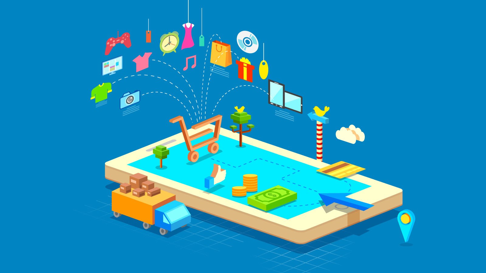

؟ Landing Pagesما هي صفحة بيع أو صفحة الهبوط
في عالم الإنترنت تعتبر صفحة البيع شيء منفصل عن الصفحة الرئيسية للموقع والموقع الرئيسي ككل. فهي تعبر عن رسالة تسويقية موجهة تستهدف فئة معينة من الزوار للقيام بإجراء محدد. لذلك فإن صفحة البيع الاحترافية لن تجد فيها (عادة) أي روابط جانبية أو رسائل مزدوجة أو إعلانات أو عروض أخرى – غير العرض الرئيسي – أو أي من مشتتات الانتباه التي تصرف الناس عن اتخاذ الإجراء المفترض منهم في الصفحة بيع
Conversion Rate معدل التحويل في صفحات الهبوط أو
يعبر عن مدى تفاعل الزوار مع العرض المقدم، واتخاذ الإجراء المستهدف منهم.
معدل التحويل = (عدد المسجلين/المشترين ÷ عدد الزوار الكلي) × 100
ومعدل التحويل – بشكل عملي – يقيس مدى نجاح
حملتك الدعائية التي قمت بإجراءها لمنتجك، وينعكس بصورة غير مباشرة على مدى نجاح منتجك/خدمتك.
معدل التحويل العالمي الطبيعي يتراوح بين 1 – 8% ولكن التجارب أثبتت أن هذه النسبة غير دقيقة حيث أن هناك معدلات
ومعايير أخرى تتحكم في نجاح الحملة التسويقية ولا يمكن قياسها بمعدل التحويل.
؟ Landing Pages لماذا يجب عليّ كصاحب موقع استخدام صفحات الهبوط
الاحتفاظ بالعميل
كما أسلفنا سابقًا كان المسوقون ينفقون آلاف
الدولارات في حملات PPC لجلب الزوار إلى موقعهم على أمل أن يشتري أحد الزوار بدون ترتيب أو تنظيم للعملية
التسويقية. فإذا اشترى العميل كان بها، وإن لم يشتر ضاع إلى الأبد.
الآن صفحات الهبوط يقف خلفها قائمة بريدية تحتفظ بالعملاء وتبقي وسيلة للتواصل معهم لتعظيم الربحية في
المستقبل.
الآن صفحات الهبوط يقف خلفها قائمة بريدية تحتفظ بالعملاء وتبقي وسيلة للتواصل معهم لتعظيم الربحية في المستقبل.
زيادة معدل التحويل
حينما يأتي الزائر إلى صفحات الهبوط الخاصة بك
وينظر إلى حيثيات عرض المنتج الخاص بك، ويتأمل في النتائج التي ستعود عليه إشباعًا من هذا المنتج إذا استثمر
فيه، تزيد الفرصة في حصولك على تحويل العميل المحتمل إلى عميل.
زيادة العائد على الاستثمار الخاص بك
احصل على أعلى عائد على استثماراتك عن طريق
التواصل معهم عن طريق القائمة البريدية – لتجربة التعامل معهم أكثر من مرة وتقديم عروض تسويقية مختلفة تزيد من
معدل التحويل أكثر من مرة .. هذا غير عمليات إعادة البيع التي تتم مع العملاء السابقين، وكذلك عمليات البيع
التي تتم عن طريق العملاء الحاليين.
عناصر نجاح صفحات الهبوط
توافق الرسالة التسويقية
يعتبر هذا العامل من أهم عوامل نجاح صفحات
الهبوط على الإطلاق .. ليس من المنطقي بأي حال من الأحوال أن تأتي بزائر عن طريق إعلان والزائر متأثر بنص
الإعلان الذي من الممكن أن يكون “جهاز iPad بـ 200 دولار فقط” ثم يأتي إلى صفحة الهبوط ليجد أن العنوان
الرئيسي بها هو “مرحبًا بك في متجر وان تاتش!!” .. ليس هذا منطقيًا بأي حال من الأحوال.
ولكن الإجراء الصحيح هو أن يكون أول ما تقع عليه عينيه فور دخوله صفحة الهبوط هو نفس الرسالة التسويقية التي
تأثر بها وجاء إلى موقعك بسببها
الكثيرون يخسرون آلاف الدولارات في حملاتهم التسويقية لأنهم يغفلون عن مثل هذه النقطة .. لذلك احرص أنت
عليها وكن متميزًا في توافق رسالتك التسويقية.
اغتنم لحظات الرضا وحقق مبيعات أعلى
“لحظة الرضا” هي تلك اللحظة التي وصل فيها
الزائر إلى إشباغ بالغ بما تعرض وبدأ في إتمام عملية الشراء .. وبينما هو يؤدي مراحل الشراء الإجمالية، ماذا
سيكون رد فعله حينما تعرض عليه كوبون خصم على المنتج القادم مقابل شراء هذه الإضافة؟
بنسبة كبيرة لن يرفض .. والأرقام هي التي تتكلم .. فالإحصائيات تقول أن من اشتروا الإكسسوارات في لحظات
الرضا كانوا أكبر بكثير من الذين اشتروا بعدها في عرض مستقبلي.
وأخيرًا
فإن التقنيات التي من الممكن أن تستخدمها
لترفع من كفاءة ومقدار معدل التحويل لصفحة الهبوط الخاصة بك كثيرة ولا يمكن حصرها ، ولكن أفضل من هذا كله
التجربة .. يجب أن تبدأ وتحرص على التجربة ومراقبة النتائج التي تبدو من تفاعل الزوار مع ما تقدم في صفحة
الهبوط وتبني حملتك التسويقية التالية بناءًا على هذه النتائج.
لا تغفل عن استخدام الفيديو
الفيديو مفيد في التسويق الإلكتروني للأشخاص
من ذوي النمط البصري الذين يحبون أن يروا مزيد من التفاصيل المعروضة، وكذلك للكسالي الذين لا يريدون أن
يبذلوا جهدًا في قراءة خطاب البيع المكون من 18 أو 20 صفحة.
أثبتت الإحصائيات أن الفيديو يؤثر بشدة في معدل التحويل %بقدر يبلغ أحيانًا 80
عناصر نجاح صفحات الهبوط

لا تغفل عن استخدام الفيديو
الفيديو مفيد في التسويق الإلكتروني
الفيديو مفيد في التسويق الإلكتروني
الفيديو مفيد في التسويق الإلكتروني
الفيديو مفيد في التسويق الإلكتروني
الفيديو مفيد في التسويق الإلكتروني
الفيديو مفيد في التسويق الإلكتروني
الفيديو مفيد في التسويق الإلكتروني
لا تغفل عن استخدام الفيديو
الفيديو مفيد في التسويق الإلكتروني
الفيديو مفيد في التسويق الإلكتروني
الفيديو مفيد في التسويق الإلكتروني
الفيديو مفيد في التسويق الإلكتروني
الفيديو مفيد في التسويق الإلكتروني
الفيديو مفيد في التسويق الإلكتروني
الفيديو مفيد في التسويق الإلكتروني
لا تغفل عن استخدام الفيديو
الفيديو مفيد في التسويق الإلكتروني
الفيديو مفيد في التسويق الإلكتروني
الفيديو مفيد في التسويق الإلكتروني
الفيديو مفيد في التسويق الإلكتروني
الفيديو مفيد في التسويق الإلكتروني
الفيديو مفيد في التسويق الإلكتروني
الفيديو مفيد في التسويق الإلكتروني